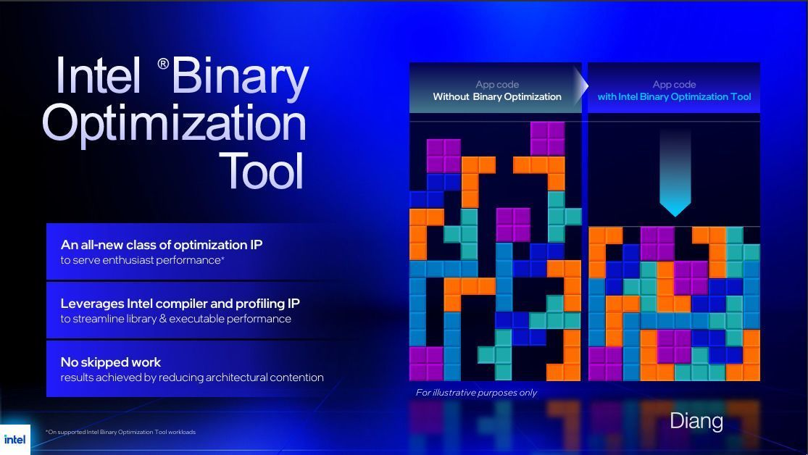
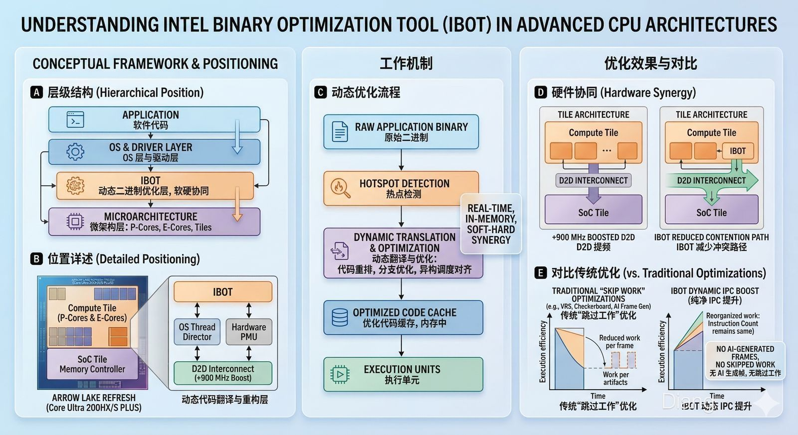

从Intel Binary Optimisation Tool (IBOT) 看高性能计算发展方向
Arrow Lake 的“二次进化”
intel 发布了Arrow Lake Refresh 的Core Ultra 200S PLUS CPUs，核心架构不变，频率微调，通过优化总线连接在 D2D 频率上提升了最多 900 MHz， 同时内存频率支持到 DDR5-7200，除此之外，Intel 在这代 CPU 上搭载了新的二进制优化工具，也就是Intel Binary Optimisation Tool （IBOT)。
IBOT旨在优化新 CPU 架构的应用，提高负载 IPC。本文将聚焦这一技术展开讨论。

什么是IBOT？
在高性能计算的发展历程中，半导体行业长期通过微缩制程与增加物理核心来获取性能增长。但物理极限的逼近以及异构架构复杂性的提升使得单纯堆料难以应对现代复杂工作负载。同时，AI 浪潮下的能源危机和 AI 终端的个人普及使企业开始重视能效比，在这个大背景下，计算终端软硬件协同设计变得尤为重要。
IBOT正是这种软硬件协同理念下的产物。简单来说，它是一个动态二进制优化层。
与传统的编译器优化是在程序运行前完成不同，IBOT 运行在系统底层，它实时监控应用程序的指令流，识别出那些执行效率低下的代码段，并针对 Arrow Lake 的微架构特性进行动态重写。
表 1：编译器优化与 Intel iBot 技术的深度对比
| 特性 | 编译器优化 | iBot 底层优化 |
|---|---|---|
| 作用对象 | 源代码（C++/C# ） | 编译后的二进制文件（.exe / .dll） |
| 获取信息 | 静态语法树、数据流分析 | 实际运行时的分析数据 (Profiling Data) |
| 针对性 | 针对指令集架构（如 x86-64） | 针对特定微架构（如流水线深度解码宽度等） |
| 典型手段 | 循环展开、函数内联、寄存器分配 | 代码块重排、去除无效指令、优化指令对齐 |
| 灵活性 | 开发者控制，发布后即固定 | 用户侧控制，可针对新发布的 CPU 进行二次优化 |
这种技术的核心目的并非单纯提高频率，而是通过减少指令周期的浪费（Stalls），让 CPU 在每个周期中都能完成更多的实质性工作。
IBOT 的核心运作机制
为了实现 IPC 的提升，IBOT 主要在以下三个环节发挥作用：
-
Profiling： 利用 CPU 内部集成的性能监控单元（PMU），IBOT 能够精准捕捉程序运行时的瓶颈：是分支预测失败？还是频繁的Cache Miss？它能识别出哪些代码导致了架构内部的交通拥堵。
-
Dynamic Transformation： 一旦锁定目标，IBOT 会在内存中对二进制指令进行调整。例如，将长串的低效指令序列替换为针对当前架构优化的专用指令集，或者重新排列数据读取顺序以匹配更快的总线带宽。
-
Contention Reduction： 在 Arrow Lake 的分 Tile 设计中，数据在不同逻辑单元间的往返往往产生延迟。IBOT 通过优化指令流，最大限度地减少了对架构资源的争用，确保核心始终处于高效负载的状态。
D2D 提频是 IBOT 的先决条件
Core Ultra 200S 由于采用了类似 AMD 的 Cheplet 设计，通过 Foveros 3D 封装将不同的 Tiles 组合在一起：Compute Tile负责算力，而SoC Tile负责内存控制。这导致了CPU 核心每读取一次内存数据，指令都必须跨越计算模块与 SoC 模块之间的物理边界。
这个边界的通信效率由 D2D 频率决定。由于 D2D 频率较低，数据在模块间传输的时间大幅拉跨整体延迟。因此初代 200S 的内存延迟普遍在 80ns-100ns，远高于上一代的 60ns 级别。
同时在 Intel 的设计中，Compute Tile内部的 Ring Bus 频率与 D2D 互连频率往往存在同步或比例关系，因此当 D2D 频率被限制在较低水平时，为了保证数据传输的稳定性，计算模块内部的环形总线频率也会受到牵制，这直接导致了 L3 缓存的带宽和响应速度下降。
这种环境下，运行任何实时指令优化工具都会产生不可忽视的开销：因为优化器本身也需要占用宝贵的互连带宽去监测和重写指令。
900 MHz 的 D2D 提频，本质上是 Intel 为 IBOT 预付的“性能税”：
-
释放带宽：得益于 D2D 频率的激增，模块间通信大大加速。这降低了基础延迟，也为 IBOT 腾出了足够的运行空间。现在，IBOT 在后台实时分析并重构二进制指令时，其产生的数据交换可以白嫖这部分多出来的带宽，而不会拖累正常的计算任务。
-
消除架构碰撞：IBOT 的核心任务是减少 Architectural Contention。在分 Tile 设计中，程序往往会因为不适应“跨片取数”而产生大量的指令气泡。IBOT 通过实时重写指令流，提前排列好数据的进出顺序，确保在高频 D2D 链路的配合下，数据能以最完美的节奏填满每一个 CPU 周期。
图 1：IBOT 的机制链。D2D 提频先释放带宽，PMU Profiling 定位瓶颈，动态重写减少指令气泡。
性能预期: IPC的纯粹提升
在实际应用中，IBOT 的加入意味着：
游戏表现：

对于那些针对旧架构编写、对单核效率敏感的老旧游戏，或是从 Switch/PS5 上移植来的非原生游戏，IBOT 可以通过实时优化指令流，显著改善 1% Low FPS。
这几年，我们已经习惯了各种Frame Generation或是Upscaling技术。尽管 DLSS 或 FSR 能够带来震撼的平均帧数，但它们本质上是基于算法的视觉补偿，在技术力上对我没什么吸引力。
IBOT 的逻辑则完全不同：它不生成任何虚假的像素，也不跳过任何必要的计算步骤。
它的核心价值在于解决“指令卡顿”。在异构架构中，很多移植游戏或旧作并不理解如何高效地在核心间分配任务，导致 CPU 频繁出现无效周期。IBOT 在二进制层面实时重排这些指令，确保每一个时钟周期都在处理有意义的代码。
其结果是显而易见的：传统的帧生成技术往往无法根治掉帧，因为底层逻辑卡顿依然存在。而 IBOT 从指令源头消除了气泡，让帧生成时间变得丝滑平均。同时，与 AI 补帧带来的输入延迟不同，IBOT 是原生的计算提速，你获得的每一帧都是真实的物理帧。
专业负载：
在复杂的生产力工具中，IBOT 的核心价值在于平滑 P-Core 与 E-Core 切换时的执行抖动。
-
优化上下文切换： 生产力任务如代码编译、大型工程文件加载常涉及频繁的核心迁移。由于 P/E 核微架构不同，切换时易引发流水线清空。IBOT 在二进制层面实时预对齐指令流，将这种切换开销降至最低。
-
填补跨 Tile 指令气泡： 针对 Arrow Lake 的分 tile 设计，IBOT 能识别并重排那些可能导致跨片取数延迟的指令。它通过预取和指令重排序，填补了由于 D2D 通信产生的指令气泡，让 CPU 在处理非线性生产力任务时，单位周期内的吞吐量更稳定。
-
老旧工具的“实时翻译”： 大量未针对异构架构优化的专业软件，在 IBOT 的干预下，可能以更契合当前 Tile 架构的逻辑运行。它本质上是让老软件在新芯片上跑出了原生优化的高效感。
总结：Intel 的“软硬协同”进化论
Intel Binary Optimisation Tool (IBOT) 的出现，标志着半导体竞争进入了一个全新的维度。
在摩尔定律放缓、异构架构日益复杂的今天，单纯堆砌晶体管和拉升频率已经难以满足玩家和专业用户的胃口。Core Ultra 200S PLUS 给出了一套新颖的组合拳：
-
硬件层面：通过物理层面的 +900 MHz D2D 提频，Intel 终于化解了分离式 Tile 架构的延迟沉疴，为后续的优化留出了重要的带宽预算。
-
软件层面：IBOT 拒绝了当下流行的视觉补偿套路。它不跳过任何计算步骤，也不生成虚假的像素，而是通过二进制层面的动态重构，让每一行指令都能在最合适的时间、以最合适的顺序进入最合适的核心。
对于追求极致体感的玩家，这意味着实打实的 1% Low FPS 提升和零延迟的响应；对于专业创作者，这代表着在繁重的生产力洪流中，获得了前所未有的执行确定性。
当物理瓶颈被打破，真正的 IPC 潜力才被彻底释放。
